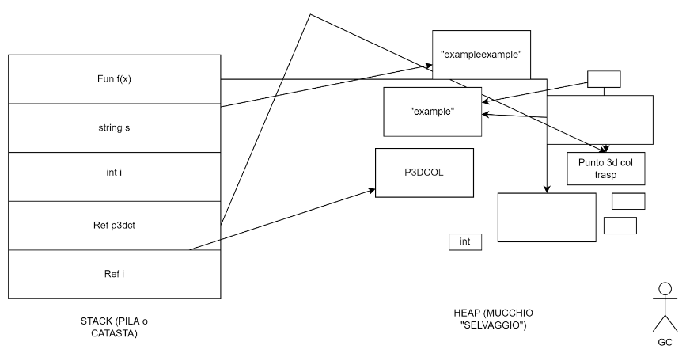
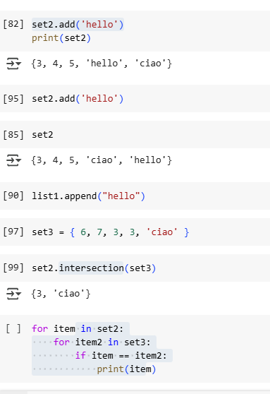
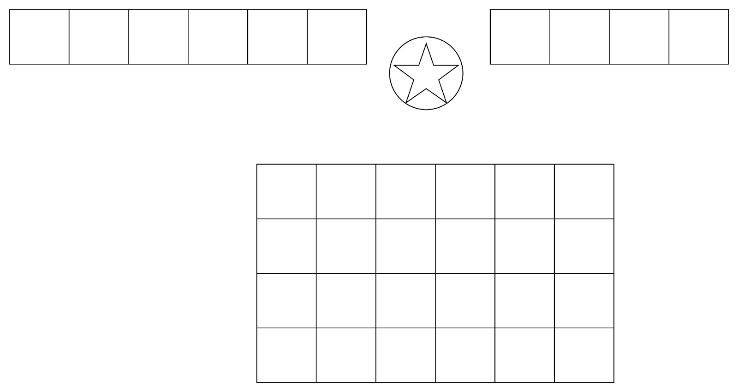
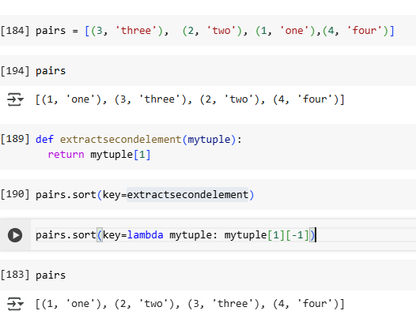

Obiettivi di apprendimento
- Capire perche Python e usato in scenari reali.
- Installare Python, aprire un notebook e lanciare uno script.
- Usare `print()`, `input()`, `help()`, `dir()`, `type()`, `callable()` e `repr()`.
- Scrivere codice con indentazione, variabili, commenti e operatori.
- Gestire stringhe, container, funzioni, moduli ed eccezioni di base.
Prerequisiti
Conoscenze informatiche di base: file, cartelle, editor di testo, terminale e concetto generale di programma.
Consigliato un ambiente con Jupyter o un editor come VS Code, oppure l'esecuzione diretta tramite notebook Colab.
1. Introduzione e ambiente
1.1 Perche usare Python
Python e leggibile, versatile e adatto ad automazione, analisi dati, scripting, integrazione con servizi esterni e prototipazione rapida.
Nel materiale delle erogazioni, il corso parte sempre da un'idea pratica: scrivere codice semplice, osservare come si comportano gli oggetti e costruire poi strumenti riutilizzabili.
1.2 Casi d'uso reali
- Automatizzare elaborazioni ripetitive su file e cartelle.
- Leggere dati strutturati e trasformarli in report.
- Interagire con API REST di servizi esterni.
- Preparare script di supporto per attivita tecniche e operative.
1.3 Installazione ed esecuzione
Python si installa come interprete locale oppure tramite distribuzioni come Anaconda e Miniconda. Per i moduli introduttivi sono rilevanti anche Visual Studio Code, le estensioni Python e l'ambiente Jupyter.
Per verificare l'installazione si usa un comando come python --version o python3 --version. Uno script viene eseguito passando il file `.py` all'interprete.
python hello.py1.4 Bytecode, PVM e IDE
Python traduce il sorgente in bytecode, una forma intermedia eseguita dalla Python Virtual Machine. Il punto importante, per chi inizia, e distinguere tra sorgente, interprete ed esecuzione.
IDLE e utile per prove rapide, ma nei materiali raccolti compaiono soprattutto notebook Jupyter e Colab come ambiente didattico. I notebook sono molto usati per prototipazione e per eseguire le celle in ordine non lineare.

2. Tipi base e oggetti
2.1 Oggetti, stack, heap e garbage collection
Le erogazioni insistono sul fatto che in Python tutto e un oggetto: anche le funzioni. Le variabili sono riferimenti, non scatole rigide di memoria, e la raccolta dei rifiuti libera gli oggetti non piu raggiungibili.
Questo schema aiuta a leggere con naturalezza concetti come mutabilita, identita e condivisione dei riferimenti.

2.2 Tipi base e built-in function
Tra le funzioni di base ricorrenti ci sono `type()`, `callable()`, `repr()`, i costruttori dei tipi e gli oggetti della libreria standard. Nel corso si usa spesso `help()` e `dir()` per esplorare i tipi standard e i loro metodi.
Le note raccolte citano in particolare la documentazione sui tipi built-in e la libreria standard come riferimento principale per l'esplorazione autonoma.
3. Container e stringhe
3.1 Ordinati e non ordinati
Il corso distingue tra sequenze ordinate e contenitori non ordinati. Le stringhe, le liste e le tuple sono sequenze; set e dizionari hanno comportamenti diversi e sono fondamentali per deduplicare, cercare e associare dati.
3.2 Mutabili e immutabili
Le stringhe e le tuple non si modificano in place; liste, set e dizionari invece si possono aggiornare. Questo punto torna piu volte negli appunti, anche quando si ragiona su riferimenti e copie.


3.3 Stringhe
Le stringhe supportano Unicode e offrono metodi ricorrenti per pulizia, ricerca, trasformazione e formattazione. Gli appunti richiamano in modo esplicito la documentazione su `str` e sul mini-linguaggio di formattazione.
Nel materiale emerge anche il pattern del formatting moderno con `format()` e delle sequenze di escape per costruire output leggibili.
4. Funzioni e controllo del flusso
4.1 Definizione, argomenti e scope
Le funzioni sono presentate come oggetti a tutti gli effetti. La lezione insiste su argomenti posizionali, keyword, default, valore restituito e scope locale, con attenzione al fatto che le funzioni possono essere passate come parametri ad altre funzioni.
Tra le varianti ricorrenti compaiono le lambda, l'uso di `enumerate`, `zip` e le funzioni di ordinamento con chiave.

4.2 Cicli, accumulo e comprehension
I pattern piu ripetuti negli appunti sono il ciclo ad accumulo, il loop su range, la scansione di una lista con indice e le comprehension per creare nuove collezioni in modo compatto.
4.3 Esempio di stile idiomatico
pairs = [(3, "three"), (2, "two"), (1, "one")]
pairs.sort(key=lambda item: item[1])5. Moduli, eccezioni e librerie
5.1 Moduli
I moduli sono il modo naturale per esternalizzare funzioni riutilizzabili. Negli appunti compaiono esempi con file locali come fibo.py, oltre all'uso della standard library tramite alias come import statistics as stat.
5.2 Librerie esterne
Le librerie come NumPy e Pandas si installano con il package manager e si verificano con pip list. Nei materiali delle erogazioni questo punto e esplicitato per chiarire la differenza tra libreria standard e pacchetti da installare.
5.3 Eccezioni
Il blocco try / except serve a gestire errori attesi senza interrompere subito il programma. E un tema ricorrente in lettura file, conversioni di tipo e interazione con risorse esterne.
Gli appunti citano anche la gestione delle connessioni e degli input non affidabili come casi d'uso naturali.
6. Materiali e riferimenti
Questa sezione raccoglie i link emersi dalle erogazioni e utile come base di studio e di esercitazione.
Laboratorio guidato
Esercizio
Creare uno script che chiede nome, anno di nascita e citta, calcola un'eta indicativa, formatta il risultato e mostra come la funzione cambia comportamento con argomenti diversi.
Riepilogo
- Python si legge bene se si capisce il modello oggetti, i riferimenti e la mutabilita.
- Container, stringhe, funzioni e moduli sono il nucleo operativo del linguaggio.
- Notebook, documentazione e librerie standard sono parte integrante del percorso introduttivo.